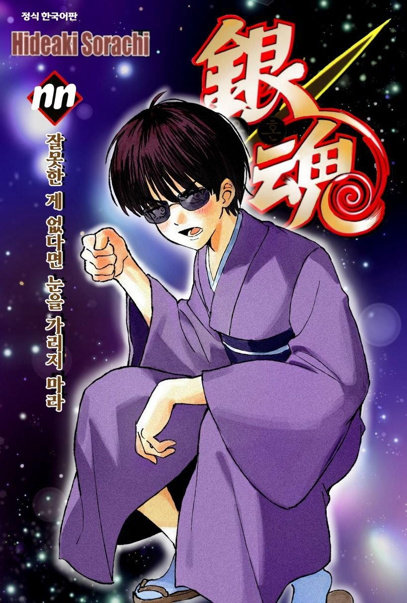

메이 이키코

現 테라카도 츠우 친위대 부대장
개요
은혼의 등장인물
캐릭터성
성격
앞서 서술했듯이 성격이 그리 좋지 않은 편이다. 대부분의 인물들에게 무차별적인 폭언을 내뱉을 뿐만 아니라 짜증이 나면 소지하고 있는 검으로 위협을 가한다. 초면인 사람에게는 꽤나 체면을 차리는 모양이지만 조금이라도 짜증나게 만들면 본색을 드러낸다. 츳코미로 인해 목소리가 크고 시끄러운 신파치와는 다른 의미로 크고 시끄럽다. 하지만 평소엔 깡패같은 성격임에도 칭찬을 해주거나 귀여워 해주는 등 상냥하게 대해주면 창피하다며 싫어하지만 실은 엄청 좋아하는게 티가 난다. 이처럼 주변 사람들에게 괜히 틱틱대는 츤데레적인 성격을 가지고 있다.
또한 어릴적에 부모를 잃은 탓에 상냥한 성인여성에게 약하다. 약할 뿐만 아니라 이키코가 늘 따르는 타에의 경우에는 콘도만큼이나 억빠를 해준다. 그 정도가 어느정도냐하면 타에의 동생이 되고싶어서 양자로 받아들여달라고 요구할 정도.
겉으로는 강해보이지만 속은 의외로 그리 강한 편은 아니다. 살인에 아무런 감정을 느끼지 않고 오직 자신이 살아가기 위해서 살인을 행해왔다. 8년 동안 그렇게 살아왔고 언제부턴가 이키코의 안에서는 진심이 되어가고 있었다. 그러나 어느날 우연히 테라카도 츠우의 방송을 보게 되고 흔들리게 된다. 실은 줄곧 죄책감을 느껴왔던 이키코는 남동생을 내버려두고 홀로 몰래 에도로 향한다. 그곳에서 남장을 하고 츠우 친위대에 들어가게 된다. 하지만 신파치가 자신을 못 알아보는 것에 분노를 느껴 대뜸 습격을 하며 재회하게 된다.
외관
회색 눈, 고동색의 살짝 곱슬끼가 있는 숏컷 머리를 하고 있다. 늘 선글라스를 끼고 있으며 뒤로 갈 수록 머리 위에 씌운 모습이 더 자주 나온다.
선글라스를 끼고 다녔던 이유는 암살자 시절 피가 눈에 튈까봐 끼고 다녔던 것이 지금까지 이어져 왔다고 한다.
자유
자유
기타